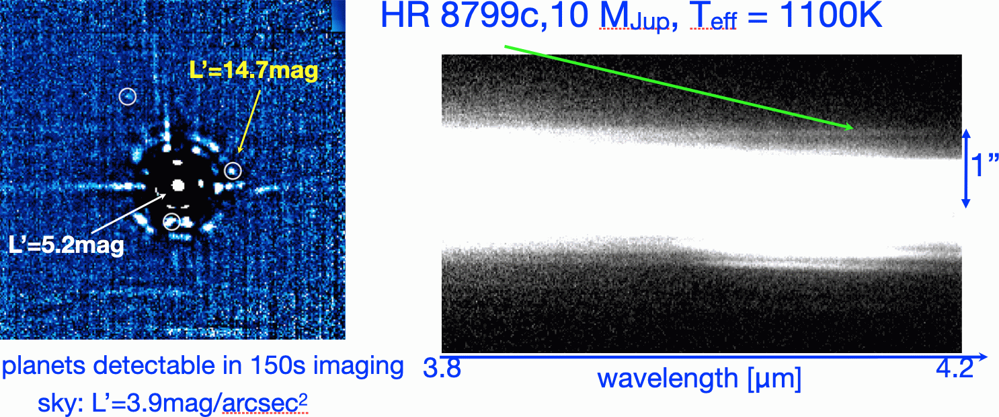

I am (and have been) involved in various instrumentation projects and science teams.
The
Roman Space Telescope Coronagraphic Instrument
aims for direct imaging of exoplanets at sub-arsec separation and at extremely high contrasts of up to 1:1E9
ANDES is an optical to near infrared high resolution spectrograph for the ESO Extremely Large Telescope
METIS is a mid-infrared imager and spectrograph for the ESO Extremely Large Telescope
AstraLux Norte and Sur are Lucky Imaging cameras operated at the CAHA 2.2m and the ESO NTT 3.5m telescopes
GRAVITY/GRAVITY+ is a near infrared (K-band) adaptive optics assisted beam combiner instrument at the ESO Very Large Telescope Interferometer
SPHERE/SPHERE+ is an optical to near infrared high angular resolution and high contrast imager and spectrosgraph at the ESO Very Large Telescope
Hokupa'a
at Gemini North was the first adaptive optics instrument at an 8 to 10m class telescope
NACO (NAOS CONICA)
was the first adaptive optics near- to mid-infrared imaging and spectroscopic instrument at the ESO Very Large Telescope

The first spectrally dispersed study of a directly imaged exoplanet, which we observed in October 2009 with NACO at the ESO VLT. The data revealed that despite of its relatively low effective temperature, the atmosphere of HR 8799c has a prevalence for CO rather than CH4 (Janson et al. 2010)